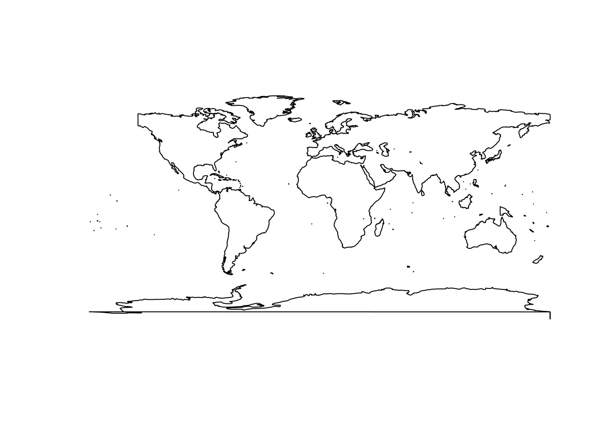

Getting started
{duckspatial} provides fast, memory-efficient functions for analysing and manipulating large spatial vector datasets in R. It bridges DuckDB’s spatial extension with R’s spatial ecosystem — in particular {sf} — so you can leverage DuckDB’s analytical power without leaving your familiar R workflow.
Let’s start by loading the packages we need:
Installation
Install the stable release from CRAN:
# install.packages("pak")
pak::pak("duckspatial")Install the latest GitHub version (more features, fewer accumulated bugs):
pak::pak("Cidree/duckspatial")Install the development version (may be unstable):
pak::pak("Cidree/duckspatial@dev")Reading data
{duckspatial} is built around the duckspatial_df S3 class: a lazy-table-like object that holds a geometry column alongside its geospatial properties, but keeps the data outside R’s memory until you explicitly ask for it.
If you have a local file (a GeoPackage, a Shapefile, a GeoJSON, etc.) you can open it lazily with ddbs_open_dataset():
countries_ddbs <- ddbs_open_dataset(
system.file(
"spatial/countries.geojson",
package = "duckspatial"
)
)
print(countries_ddbs)
#> # A duckspatial lazy spatial table
#> # ● CRS: EPSG:4326
#> # ● Geometry column: geom
#> # ● Geometry type: POLYGON
#> # ● Bounding box: xmin: -178.91 ymin: -89.9 xmax: 180 ymax: 83.652
#> # Data backed by DuckDB (dbplyr lazy evaluation)
#> # Use ddbs_collect() or st_as_sf() to materialize to sf
#> #
#> # Source: table<temp_view_0e105ef6_92bd_4a06_ad55_549a6af94c03> [?? x 8]
#> # Database: DuckDB 1.5.1 [unknown@Linux 6.17.0-1010-azure:R 4.5.3/:memory:]
#> OGC_FID CNTR_ID NAME_ENGL ISO3_CODE CNTR_NAME FID date geom
#> <dbl> <chr> <chr> <chr> <chr> <chr> <date> <wk_>
#> 1 0 AR Argentina ARG Argentina AR 2021-01-01 <POL…
#> 2 1 AS American Samoa ASM American… AS 2021-01-01 <POL…
#> 3 2 AT Austria AUT Österrei… AT 2021-01-01 <POL…
#> 4 3 AQ Antarctica ATA Antarcti… AQ 2021-01-01 <POL…
#> 5 4 AD Andorra AND Andorra AD 2021-01-01 <POL…
#> 6 5 AE United Arab Emira… ARE ????????… AE 2021-01-01 <POL…
#> 7 6 AF Afghanistan AFG ????????… AF 2021-01-01 <POL…
#> 8 7 AG Antigua and Barbu… ATG Antigua … AG 2021-01-01 <POL…
#> 9 8 AI Anguilla AIA Anguilla AI 2021-01-01 <POL…
#> 10 9 AL Albania ALB Shqipëria AL 2021-01-01 <POL…
#> # ℹ more rowsNote: The first call to
ddbs_open_dataset()may take a few seconds. Internally, {duckspatial} creates a default DuckDB connection, then installs and loads the Spatial extension into it. Subsequent calls reuse the same connection and are much faster. We cover this connection in more detail in the Working in a database section below.
Printing a duckspatial_df object displays the most important metadata at a glance:
| Field | Description |
|---|---|
| CRS | Coordinate reference system (AUTHORITY:CODE) |
| Geometry column | Name of the column holding geometries |
| Geometry type | Type(s) present (e.g. POLYGON, MULTIPOLYGON, POINT) |
| Bounding box | Four coordinates bounding all geometries |
| Source | Name of the temporary view inside DuckDB |
| Database | DuckDB database path and version |
| Data | First rows of the dataset |
The table is not in R’s memory; it lives inside the DuckDB connection. Every {duckspatial} operation you apply runs there, using the DuckDB engine.
Alternatively, if you already have an sf object in memory, you can convert it to a duckspatial_df with as_duckspatial_df():
## read with sf as usual
countries_sf <- read_sf(
system.file(
"spatial/countries.geojson",
package = "duckspatial"
)
)
## push into DuckDB
countries_ddbs <- as_duckspatial_df(countries_sf)
class(countries_ddbs)
#> [1] "duckspatial_df" "tbl_duckdb_connection" "tbl_dbi"
#> [4] "tbl_sql" "tbl_lazy" "tbl"Processing data
Let’s run a typical spatial workflow: dissolving all country polygons into a single MULTIPOLYGON with internal boundaries removed, using ddbs_union() (the {duckspatial} equivalent of sf::st_union()).
ddbs_union() requires all geometries to be valid. We can check this first with ddbs_is_valid() (equivalent to sf::st_is_valid()), which appends a logical is_valid column to the lazy table so the subsequent filter() also runs inside DuckDB:
countries_ddbs |>
ddbs_is_valid() |>
filter(!is_valid)
#> # A duckspatial lazy spatial table
#> # ● CRS: EPSG:4326
#> # ● Geometry column: geometry
#> # ● Geometry type: POLYGON
#> # ● Bounding box: xmin: -178.91 ymin: -89.9 xmax: 180 ymax: -63.281
#> # Data backed by DuckDB (dbplyr lazy evaluation)
#> # Use ddbs_collect() or st_as_sf() to materialize to sf
#> #
#> # Source: table<temp_view_28b2ab11_2b80_44cc_a386_012b2f03078d> [?? x 8]
#> # Database: DuckDB 1.5.1 [unknown@Linux 6.17.0-1010-azure:R 4.5.3/:memory:]
#> CNTR_ID NAME_ENGL ISO3_CODE CNTR_NAME FID date is_valid geometry
#> <chr> <chr> <chr> <chr> <chr> <date> <lgl> <wk_wkb>
#> 1 AQ Antarctica ATA Antarctica AQ 2021-01-01 FALSE <POLYGON ((…Antarctica has invalid geometries (likely self-intersections). We can repair them with ddbs_make_valid() before computing the union, and because duckspatial_df objects are lazy, we can chain both steps in a single pipe:
world_ddbs <- countries_ddbs |>
ddbs_make_valid() |>
ddbs_union()
print(world_ddbs)
#> # A duckspatial lazy spatial table
#> # ● CRS: EPSG:4326
#> # ● Geometry column: geometry
#> # ● Geometry type: MULTIPOLYGON
#> # ● Bounding box: xmin: -178.91 ymin: -89.9 xmax: 180 ymax: 83.652
#> # Data backed by DuckDB (dbplyr lazy evaluation)
#> # Use ddbs_collect() or st_as_sf() to materialize to sf
#> #
#> # Source: table<temp_view_ed5145d5_987c_4661_9e7f_ef2f75447c1c> [?? x 1]
#> # Database: DuckDB 1.5.1 [unknown@Linux 6.17.0-1010-azure:R 4.5.3/:memory:]
#> geometry
#> <wk_wkb>
#> 1 <MULTIPOLYGON (((-148.8727 -85.21352, -150.1968 -85.49222, -151.2143 -85.4843…The result is still a lazy duckspatial_df. To visualise it we need to pull the data into R as an sf object. Any of the following three calls do that:
# Option A
world_sf <- ddbs_collect(world_ddbs)
# Option B
world_sf <- collect(world_ddbs)
# Option C
world_sf <- st_as_sf(world_ddbs)
world_sf <- world_ddbs |>
ddbs_collect()
print(world_sf)
#> Simple feature collection with 1 feature and 0 fields
#> Geometry type: MULTIPOLYGON
#> Dimension: XY
#> Bounding box: xmin: -178.9125 ymin: -89.9 xmax: 180 ymax: 83.65187
#> Geodetic CRS: WGS 84
#> # A tibble: 1 × 1
#> geometry
#> * <MULTIPOLYGON [°]>
#> 1 (((-148.8727 -85.21352, -150.1968 -85.49222, -151.2143 -85.48437, -151.7571 -…
plot(world_sf)
Working in a database
So far we have been using the default, temporary DuckDB connection that {duckspatial} manages for us. For some use cases you may want to manage the connection yourself, most commonly when you need a persistent database that survives the R session.
There are two connection modes:
-
Non-persistent (in-memory): data exists only for the duration of the R session or until it is closed. As of v1.0.0, this mode is kept for backward compatibility, but working with
duckspatial_dfobjects directly achieves the same goals with less boilerplate. -
Persistent: data is written to a
.duckdbor.dbfile on disk and survives after the session ends.
Creating a connection
{duckspatial} provides a convenience wrapper, ddbs_create_conn(), that creates a DuckDB connection, installs the Spatial extension, and loads it, all in one call:
conn <- ddbs_create_conn()You can also limit the resources DuckDB is allowed to use:
conn <- ddbs_create_conn(
threads = 2,
memory_limit_gb = 8
)Under the hood, ddbs_create_conn() is equivalent to:
conn <- dbConnect(duckdb())
ddbs_install(conn)
ddbs_load(conn)Non-persistent database
Once you have a connection, write spatial data into it with ddbs_write_table(). It accepts both sf and duckspatial_df objects:
ddbs_write_table(conn, countries_sf, name = "countries")
#> ✔ Table countries successfully importedVerify the table is there:
ddbs_list_tables(conn)
#> table_schema table_name table_type
#> 1 main countries BASE TABLEFrom here the workflow mirrors the duckspatial_df workflow. Functions that accept a duckspatial_df also accept a table name + connection pair:
ddbs_is_valid("countries", conn = conn) |>
filter(!is_valid)
#> # A duckspatial lazy spatial table
#> # ● CRS: EPSG:4326
#> # ● Geometry column: geometry
#> # ● Geometry type: POLYGON
#> # ● Bounding box: xmin: -178.91 ymin: -89.9 xmax: 180 ymax: -63.281
#> # Data backed by DuckDB (dbplyr lazy evaluation)
#> # Use ddbs_collect() or st_as_sf() to materialize to sf
#> #
#> # Source: table<temp_view_b97ffd05_1632_4575_8b6f_09d08a7ba41e> [?? x 8]
#> # Database: DuckDB 1.5.1 [unknown@Linux 6.17.0-1010-azure:R 4.5.3/:memory:]
#> CNTR_ID NAME_ENGL ISO3_CODE CNTR_NAME FID date is_valid geometry
#> <chr> <chr> <chr> <chr> <chr> <date> <lgl> <wk_wkb>
#> 1 AQ Antarctica ATA Antarctica AQ 2021-01-01 FALSE <POLYGON ((…You can write intermediate results as named tables in the database by passing a name argument:
ddbs_make_valid("countries", conn = conn, name = "countries_valid")
#> ✔ Query successful
ddbs_union("countries_valid", conn = conn, name = "world")
#> ✔ Query successfulddbs_read_table() materialises a table directly as sf (not lazily), so the result can be passed straight to plot():
ddbs_read_table(conn, "world") |>
plot()
#> ✔ table world successfully imported.
When you are done, close the connection. Because this is an in-memory database, all tables written to it will be discarded:
ddbs_stop_conn(conn)Persistent database
The workflow is identical to the non-persistent case. The only difference is the connection string, pass a file path to ddbs_create_conn():
conn <- ddbs_create_conn("my_database.duckdb")A practical pattern is to do all processing with the duckspatial_df workflow (which is lazily evaluated inside the default connection), and only write the final results to the persistent database:
## open persistent connection
conn <- ddbs_create_conn("my_database.duckdb")
## do all processing with duckspatial_df objects
world_ddbs <- ddbs_open_dataset(
system.file("spatial/countries.geojson", package = "duckspatial")
) |>
ddbs_make_valid() |>
ddbs_union()
## write only the final result to the persistent database
ddbs_write_table(conn, world_ddbs, name = "world")
## close — "my_database.duckdb" will persist on disk
ddbs_stop_conn(conn)